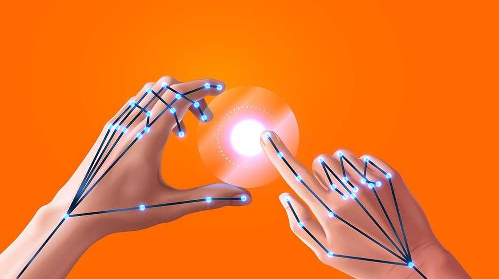
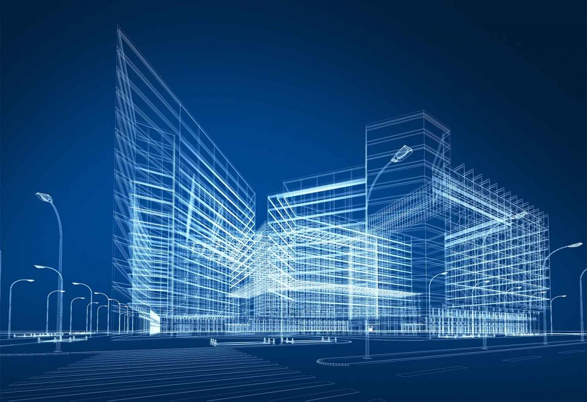

Virtual Mouse
A virtual mouse is a software program that allows you to control the movement of the mouse cursor on your computer screen without physically moving a physical mouse.The cursor moves based on the gesture of the hand which is trained by machine language.
Learn moreOnline Construction Site
Online construction refers is the use of technology and digital tools to manage and execute construction projects remotely. This include virtual collaboration, online project management, and the use of software to design and plan construction projects.
Learn more